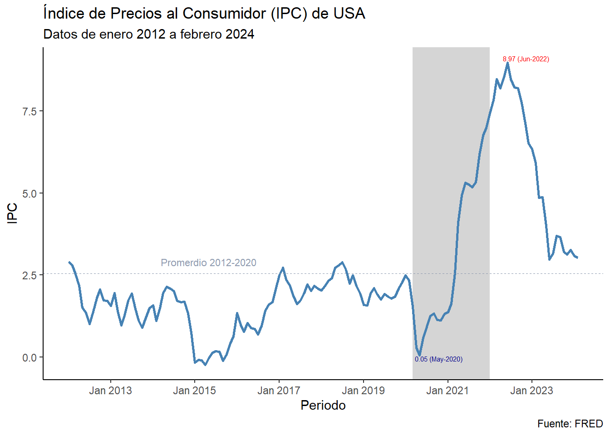

getSymbols(Symbols = NULL, # Obligatorio
env = parent.frame(),
reload.Symbols = FALSE,
verbose = FALSE,
warnings = TRUE,
src = "yahoo", # Obligatorio
symbol.lookup = TRUE,
from = "2010-01-01",
to = "2024-01-01"
...)Introducción
Cuando comenzamos a trabajar con R, es común que analicemos datos en formatos Excel que descargamos en nuestro ordenador. Con el paso del tiempo, esta tarea se convierte en una rutina que puede volverse tediosa, especialmente cuando lidiamos con grandes cantidades de datos que ralentizan el procesamiento y consumen una cantidad considerable de memoria de nuestra computadora.
Imagina la posibilidad de descargar bases de datos de forma remota, seleccionando únicamente los datos necesarios para tu análisis y evitando cargar información que no te interese. Para hacer esto, el paquete quantmod proporciona una función llamada getSymbols, que permite la descarga de datos desde páginas web.
Al utilizar getSymbols, puedes simplificar y automatizar el proceso de adquisición de datos, lo que te brinda la flexibilidad de trabajar con conjuntos de datos sin comprometer el rendimiento de tu computadora. Esta función te libera de la carga de descargar manualmente archivos y te permite concentrarte en el análisis y la interpretación de los datos relevantes para tu investigación o proyecto.
Paquetes: quantmod, tidyverse, zoo, gt
getSymbols
Esta función necesita algunas información esenciales de la data que se necesita descargar, como el símbolo de los datos y el nombre de la pagina donde se encuentra la data.
Estrutura de la función getSymbols:
Nota: Dependiendo de la pagina que vayas a descargar pueden variar la estructura de la función, pueden consultar con ?getSymbols(). |
En esta caso vamos a descargar los datos del Índice de Precios al Consumidor de Estados Unidos desde la pagína principal de la Federal Reserve Economic Data, con los siguientes parametros:
getSymbols(
Symbols = "USACPALTT01CTGYM",
src = "FRED",
from = "2012-01-01",
to = "2024-02-01",
format = "xts",
periodicity = "monthly"
)[1] "USACPALTT01CTGYM"Lo primero que tenemos es el Symbols, este especifica el identificador del conjunto de datos que se deseamos obtener. En este caso, USACPALTT01CTGYM se refiere al IPC de USA, estos identificadores lo podemos encontrar al lado del nombre cuando visitamos la página principal de la FRED. Especificamos la fuente con src, en este caso, “FRED”. Luego, definimos el rango de fechas con from y to, que indican el periodo de tiempo que deseamos descargar. Por último, especificamos el formato de los datos con format y la periodicidad con periodicity.
Por defecto el conjunto de datos que descargamos se guardara con el nombre de símbolo:
dplyr::glimpse(USACPALTT01CTGYM)An xts object on 2012-01-01 / 2024-02-01 containing:
Data: double [146, 1]
Columns: USACPALTT01CTGYM
Index: Date [146] (TZ: "UTC")
xts Attributes:
$ src : chr "FRED"
$ updated: POSIXct[1:1], format: "2024-05-19 22:26:49"Manipulación y vizualización de los datos
Primero, hacemos algunos ajuste para hacer nuestro conjunto de datos más amigables para las visualizaciones:
ipc_usa <- zoo::fortify.zoo(USACPALTT01CTGYM) |> # Con esta función convertimos a data.frame
setNames(c("periodo", "ipc")) # aquí asignamos nombres fácil de identificar
ipc_usa |>
tail(n = 3) |>
gt::gt()| periodo | ipc |
|---|---|
| 2023-12-01 | 3.262947 |
| 2024-01-01 | 3.081752 |
| 2024-02-01 | 3.032076 |
Siempre es bueno agregar un breve análisis de los datos y resaltarlo en nuestro gráfico, aquí agrego algunas ajuste para volver el gráfico más informativo. + Manipulando los datos para hacer un gráfico más informativo:
